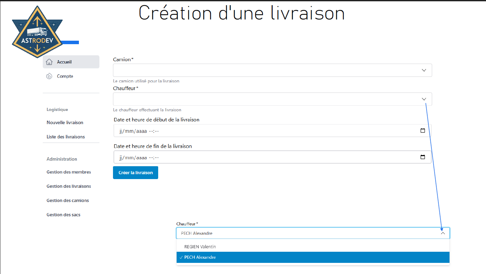
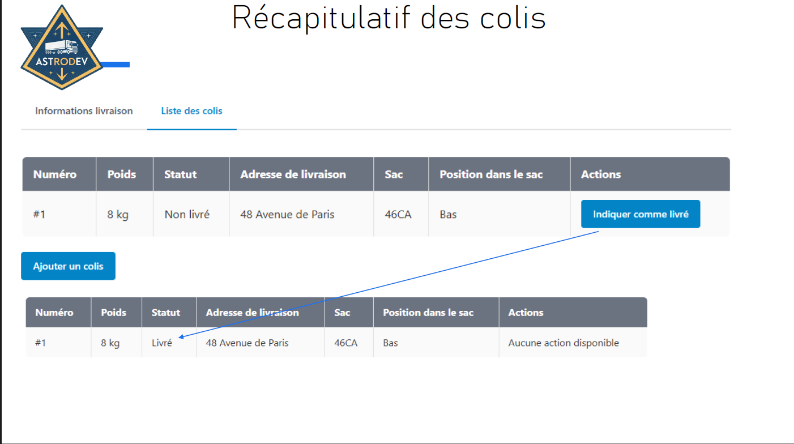

Plateforme de gestion logistique.
Un système numérique pour optimiser le suivi, l'organisation et la traçabilité des colis dans les camions de transport.

Contexte et problématique
Dans le cadre de l’optimisation de la gestion des colis pour les livraisons, ce projet vise à développer un système de gestion numérique des colis destiné à faciliter le suivi et l’organisation des livraisons pour une entreprise de transport. Ce système permettra de localiser précisément chaque colis dans les camions de transport, en optimisant leur organisation et en garantissant une traçabilité tout au long du parcours, depuis leur prise en charge jusqu’à leur destination finale.
Objectifs
L’application doit permettre aux agents de transport de :
Missions principales
- Analyse du cahier des charges
- Création du devis
- Créer les tâches sur Trello et les attribuer aux différents membres de l'équipe
- Page d'accueil
- Gestion du scanner de QR code Front-end et Back-end
- Passage du code sur SonarQube pour les failles et la qualité du code
Étapes de réalisation
- Analyse du besoin du client.
- Division des tâches.
- Création d'une maquette.
- Retour avec le client sur la maquette
- Développement de la solution
- Réalisation des tests unitaires et d'intégration
- Passage du code sur SonarQube et débogage
- Livraison de la solution
En images

Ce que j'en retiens
C'était notre premier projet avec un client réel et on n'était pas forcément prêts au début, mais avec de la communication dans l'équipe et avec le client, on a réussi à mener ce projet à bien. Le plus dur a été de faire fonctionner tout le code ensemble, car chacun avait une branche et on ne faisait pas de merge régulièrement, donc c'était très complexe à la fin.